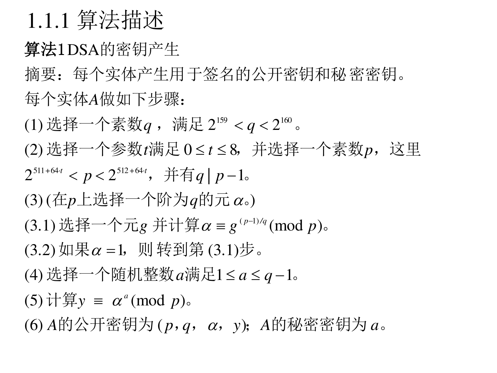
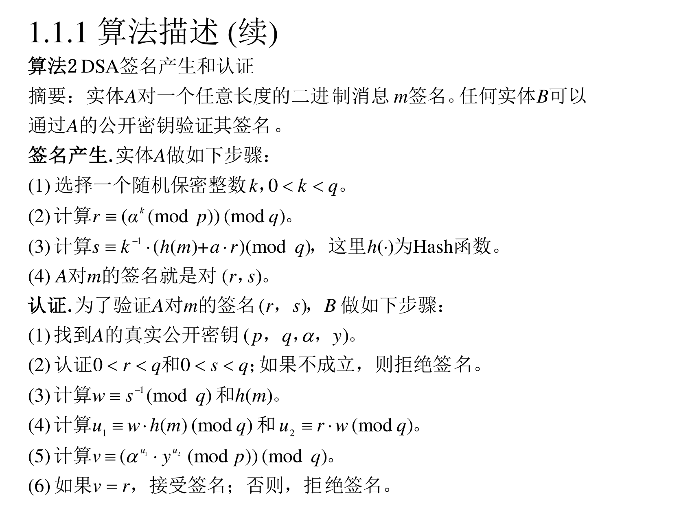
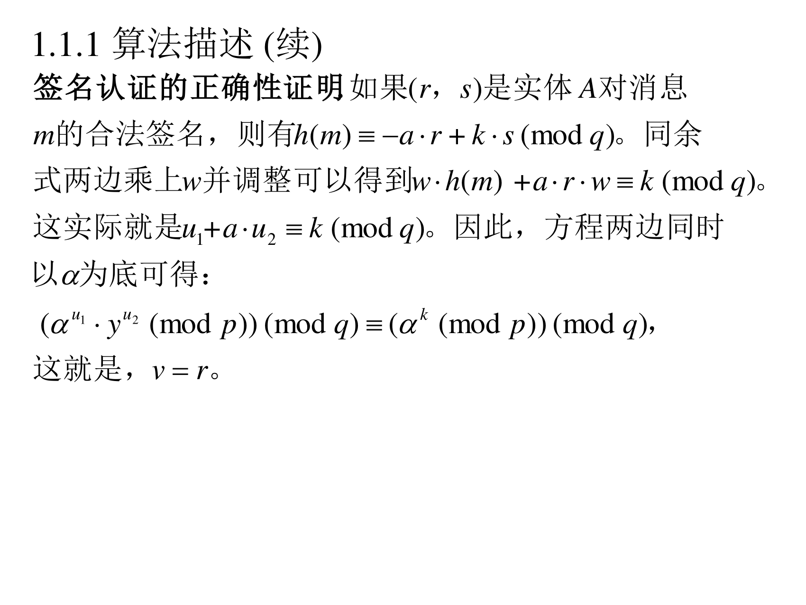
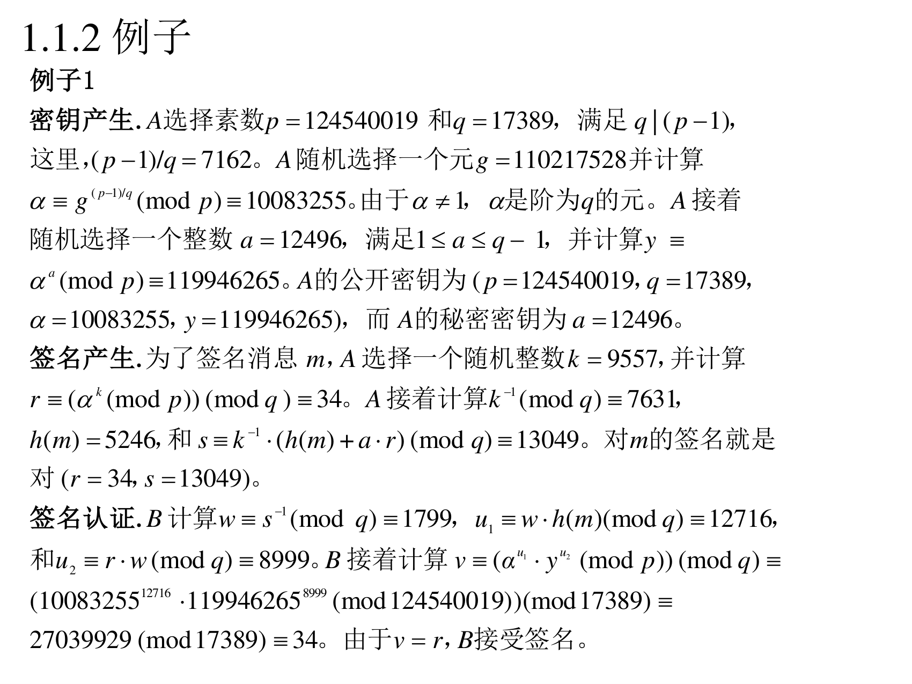

8.1 ElGamal 族签名方案
8.1.1 数字签名算法 DSA
8.1.1.1 背景
（PPT 第 4 页）
1991 年 8 月，美国国家标准与技术研究所（NIST）提出了数字签名算法（DSA）。DSA 成为美国联邦信息处理标准（FIPS 186）称为数字签名标准（DSS），这是第一个为政府所认可的数字签名方案。DSA 是 ElGamal 数字签名方案的一种形式。
翻译成人话：DSA 是"官方标准化过的 ElGamal 签名"。它的核心改造是：不用整个 Zp∗（阶 p−1），而用一个阶为 q 的子群（q 是 p−1 的大素因子）。这么做的好处有两个：
- 签名短（签名里的数只要 160 比特左右，而不用 1024 比特）；
- 避开 Pohlig-Hellman 的威胁（因为子群的阶是素数 q，不是平滑的 p−1）。
8.1.1.2 算法 1：密钥产生
（PPT 第 5 页）

算法 1（DSA 的密钥产生）
摘要：每个实体产生用于签名的公开密钥和秘密密钥。每个实体 A 做如下步骤：
(1) 选择一个素数 q，满足 2159<q<2160。
(2) 选择一个参数 t 满足 0≤t≤8，并选择一个素数 p，这里 2511+64t<p<2512+64t，并有 q∣p−1。
(3)（在 p 上选择一个阶为 q 的元 α。）
(3.1) 选择一个元 g 并计算 α≡g(p−1)/q(modp)。
(3.2) 如果 α=1，则转到第 (3.1) 步。
(4) 选择一个随机整数 a 满足 1≤a≤q−1。
(5) 计算 y≡αa(modp)。
(6) A 的公开密钥为 (p,q,α,y)；A 的秘密密钥为 a。
翻译成人话（四个参数各管什么）：
| 参数 |
尺寸 |
作用 |
| q |
160 比特素数 |
子群的阶，决定签名长度（r,s 都在 [0,q) 内） |
| p |
512∼1024 比特，且 q∣p−1 |
提供"模 p 的大世界"，决定安全性 |
| α |
α=g(p−1)/qmodp |
子群的生成元，阶恰为 q |
| y |
αamodp |
公钥身份（a 是私钥） |
第 (3) 步为什么能造出一个阶为 q 的元素：因为 q∣p−1，取 g(p−1)/q。若结果不是 1，它的阶就正好是 q（这是循环群的标准结论）。若得到 1 就换一个 g 重试。
补为什么 q 取 160 比特、p 取 512–1024 比特：q 的大小决定了"求 q 阶子群上的离散对数"的难度（q≈280，需要 280 次运算才可能破）；p 的大小决定"指数积分"的难度。两者是独立的两道门。
8.1.1.3 算法 2：签名产生与认证
（PPT 第 6 页）

算法 2（DSA 签名产生和认证）
摘要：实体 A 对一个任意长度的二进制消息 m 签名。任何实体 B 可以通过 A 的公开密钥验证其签名。
签名产生. 实体 A 做如下步骤：
(1) 选择一个随机保密整数 k，0<k<q。
(2) 计算 r≡(αk(modp))(modq)。
(3) 计算 s≡k−1(h(m)+a⋅r)(modq)，这里 h(⋅) 为 Hash 函数。
(4) A 对 m 的签名就是对 (r,s)。
认证. 为了验证 A 对 m 的签名 (r,s)，B 做如下步骤：
(1) 找到 A 的真实公开密钥 (p,q,α,y)。
(2) 认证 0<r<q 和 0<s<q；如果不成立，则拒绝签名。
(3) 计算 w≡s−1(modq) 和 h(m)。
(4) 计算 u1≡w⋅h(m)(modq) 和 u2≡r⋅w(modq)。
(5) 计算 v≡(αu1yu2(modp))(modq)。
(6) 如果 v=r，接受签名；否则，拒绝签名。
翻译成人话（DSA 的签名方程和验证方程为什么长这样）：
签名：s=k−1(h(m)+ar)modq。把它乘 k 整理一下，得到一个更"对称"的式子：
k⋅s≡h(m)+a⋅r(modq)⟺h(m)≡ks−ar(modq)
验证：验证方要通过 r=αk 的形式来确认。注意到
αu1yu2=αwh(m)⋅αarw=αw(h(m)+ar)=αw⋅ks=αk=…
而最后这一步用的正是 w=s−1，所以 αksw=αk。于是 αu1yu2 和 αk 是同一个数，都取 modq 后自然等于 r —— 验证通过。
第 (2) 步的"r 再取一次模"：注意 r 是"αkmodp 之后再 modq"。这是 DSA 的特点（叫"压缩到子群"），让 r 只有 160 比特。
8.1.1.4 正确性证明
（PPT 第 7 页）

签名认证的正确性证明. 如果 (r,s) 是实体 A 对消息 m 的合法签名，则有 h(m)≡a⋅r+k⋅s(modq)。同余式两边乘上 w 并调整可以得到 w⋅h(m)+a⋅r⋅w≡k(modq)。这实际就是 u1+a⋅u2≡k(modq)。因此，方程两边同时以 α 为底可得：
(αu1yu2(modp))(modq)≡(αk(modp))(modq)
这就是 v=r。
翻译成人话：把上面的推理写成 PPT 的记号就是这一页。记住只有一句：u1+au2≡k(modq)。
8.1.1.5 例子 1（完整手算）
（PPT 第 8 页）

例子 1
密钥产生. A 选择素数 p=124540019 和 q=17389，满足 q∣(p−1)，这里 (p−1)/q=7162。A 随机选择一个元 g=110217528 并计算
α≡g(p−1)/q(modp)≡10083255
由于 α=1，α 是阶为 q 的元。A 接着随机选择一个整数 a=12496，满足 1≤a≤q−1，并计算 y≡αa(modp)=119946265。A 的公开密钥为 (p=124540019, q=17389, α=10083255, y=119946265)，而 A 的秘密密钥为 a=12496。
签名产生. 为了签名消息 m，A 选择一个随机整数 k=9557，并计算 r≡(αk(modp))(modq)=34。A 接着计算 k−1(modq)=7631，h(m)=5246，和 s≡k−1(h(m)+a⋅r)(modq)=13049。对 m 的签名就是对 (r=34, s=13049)。
签名认证. B 计算 w≡s−1(modq)=1799，u1≡w⋅h(m)(modq)=12716，和 u2≡r⋅w(modq)=8999。B 接着计算
v≡(αu1yu2(modp))(modq)≡(1008325512716⋅1199462658999(mod124540019))(mod17389)≡27039929(mod17389)≡34
由于 v=r，B 接受签名。
核对一遍（本讲义把每一步都验算过，与 PPT 完全一致）：
| 步骤 |
计算 |
结果 |
| 公共参数 |
(p−1)/q |
7162，且 17389∣124540018 ✔ |
| 子群生成元 |
1102175287162mod124540019 |
10083255 ✔ |
| 公钥 |
αa=1008325512496mod124540019 |
119946265 ✔ |
| 签名 r |
(αkmodp)modq |
34 ✔ |
| 逆元 |
9557−1mod17389 |
7631 ✔ |
| 签名 s |
7631×(5246+12496×34)mod17389 |
13049 ✔ |
| 验证 w |
13049−1mod17389 |
1799 ✔ |
| 验证 u1 |
1799×5246mod17389 |
12716 ✔ |
| 验证 u2 |
34×1799mod17389 |
8999 ✔ |
| 验证 v |
(αu1yu2modp)modq |
34 ✔（中间量 27039929 也吻合） |
顺手验一下 u1+au2≡k（这条式子是正确性证明的核心，值得自己动手核一遍）：
u1+au2=12716+12496×8999=12716+112451504=112464220
112464220mod17389=9557=k ✔
换一种更省事的写法（用 w(h(m)+ar)，注意是先算括号里的和再统一乘 w）：h(m)+ar=5246+12496×34=430110，1799×430110mod17389=9557 ✔ 一样。
这一条等式就是"v 为什么必然等于 r"的全部秘密。
补手算 DSA 时最容易卡住的地方：u2=rw(modq)，而证明里的 au2 是"模 q 意义下的乘法"，别把实数和模运算混着算。
8.1.1.6 DSA 的安全与执行问题
（PPT 第 9 页）
(1) DSA 的安全依赖两个不同的离散对数问题。一个是模 p 的离散对数问题，另一个是阶为 q 的循环子群上的离散对数问题。
(2) 根据算法 1（FIPS 186），q 的长度固定为 160 比特，然而 p 的长度可以在 512 比特到 1024 比特之间以 64 比特为倍数浮动。FIPS 186 不允许 p 大于 1024 比特。（注：这是 PPT 时代的限制；后来的 FIPS 186-3/4 已放宽到 3072 比特。）
（PPT 第 10 页）
(3) 签名产生主要需要一次模幂，平均需要 240 次模乘。DSA 的一个好处在于模幂可以事先计算好而不需要等到签名产生时计算。比较而言，RSA 签名方案就不可能事先计算。签名认证的主要工作在于两个模幂，每个的指数都是 160 比特。平均每个需要 240 次模乘，总共 480 次模乘。有一些通过同步计算两个模幂来减少模乘次数的方法，如果使用，平均开销需要 280 次模乘。
翻译成人话：
- 签名要"预热"：αk 这一项和消息无关（只依赖随机数 k 和公开的 α）。所以可以在空闲时提前算好一堆 αk，签名时直接取用——只有两次在线模乘（r 取模、s 的计算）。这对服务器高并发特别有用。
- RSA 不能预热：RSA 签名要对具体的 m 求 d 次幂，消息不给出来就没法算。
- 验证比签名贵：DSA 要算两个模幂（各 240 次模乘），但可以用"同步计算"技巧压到 280 次。
（PPT 第 11 页）
(4) 不需要为每个实体选择不同的素数 p 和 q。DSS 允许整个系统选择一组参数 p，q，和 α。但这无疑给攻击者提供了更具吸引力的目标。
(5) 认证需要计算 s−1(modq)，如果 s=0，则 s−1 不存在。为了避免这种情况，签名者需要检查 s=0；但是，如果假定 s 是随机元，则 s=0 的概率为 (1/2160)。在实践中，这种情况几乎不可能发生。签名者也需要检查 r=0。如果签名者发现 r=0 或 s=0，可以换一个新的 k。
翻译成人话：
- (4) 这是"方便 vs 安全"的经典取舍。共用 (p,q,α) 让证书和参数管理简单（DSS 明确允许），但攻击者只需要攻破一组参数就能打全系统（还是第六讲指数积分数据复用的老问题）。
- (5) 两个边界检查：s=0 时逆元不存在（协议崩溃），r=0 同理。理论上概率 2−160 可以忽略，但实现里必须写这个检查——否则攻击者可以构造恶意输入让你做"除以零"。